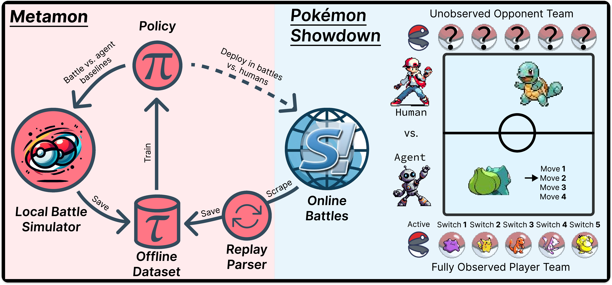

Competitive Pokémon Singles (CPS) is a complex turn-based strategy game that combines the long
planning horizons of chess, the imperfect information and stochasticity of poker, and enough named
entities and niche gameplay mechanics to fill an encyclopedia. Players design and control teams of Pokémon
to deal
damage to their opponent until the last player with healthy Pokémon wins. CPS is an
exciting RL problem because it requires reasoning under uncertainty in a vast state space.
CPS is played on Pokémon
Showdown,
a popular website that simulates the mechanics of every "generation" of the best-selling video game
franchise.
We focus on the highly competitive world of Pokémon's first four generations, where battles are
longest and reveal the least information about the opponent's team.
The videos below show our final model playing the most popular ruleset of all four generations against an
LLM-Agent method called
PokéLLMon. Our policy
learns to play entirely
from data without Pokémon heuristics or model-based search.
Generation 1 "OverUsed" (OU)
Generation 2 OU
Generation 3 OU
Generation 4 OU
These videos are sampled from a match of 300 battles with a win rate of 95%, but don't blame the LLM,
because most competitive humans would lose too! This page provides a short summary of how this agent was
trained and where future work might go from here. For much more information, please check out our paper.
Building an Offline RL Dataset of Human Battles
Pokémon Showdown (PS) stores turn-by-turn "replays" of battles spanning more than a decade. The PS replay
dataset
is an exciting source of naturally occurring data. However, there is a critical
problem: CPS decisions are made from the partially observed point-of-view of one of the two competing
players, but PS replays record the perspective of a spectator who has access to information
about neither team. We develop a pipeline to reconstruct the first-person
perspective of an agent from PS replays,
thereby unlocking a dataset of real human battles spanning more than a decade that
grows larger every day. We are able to reconstruct more than 475k human
demonstrations (with shaped rewards) from battles dating back to 2014.
Model-Free Pokémon with Transformers
Our dataset enables a general perspective on the Pokémon Showdown AI problem that has previously been
impractical: that
sequence models might be able to learn to play without explicit search or heuristics by using model-free RL
and long-term memory to infer their opponent's team and tendencies. Our experiments take this perspective to
its extreme and create a case study in the process of training and evaluating large policies. We develop a
suite of heuristic and imitation learning (IL) opponents for offline
evaluation with procedurally generated Pokémon teams. With these opponents as a benchmark, we evaluate
Transformers of up to 200M parameters trained by IL and offline RL. We then explore the idea that our
models would benefit from training on intentionally unrealistic ("synthetic") self-play datasets that do not
attempt to
recreate the unknown distribution of teams and opponents in online battles.

Human-Level Agents
We train and evaluate a total of 20 agents against a variety of opponents including custom heuristics, RNN
imitation learning policies, a strong open-source
heuristic search engine, an LLM-Agent, and each other.
Finally, we compete against human players by queuing for ranked battles on Pokémon Showdown. Our best agents
rise into the top 10% of active usernames and onto the global leaderboards. You can watch replays of
hundreds
of our battles via links in the paper.
Our work enables a scalable offline RL approach to Competitive Pokémon and demonstrates that sequence
models trained on historical gameplay can be competitive with humans in the challenging setting of
Generations 1-4.
Our dataset will continue to grow over time and may be of broader
interest in offline RL as a way to evaluate new research on a complex task. We hope our dataset and baseline
models will inspire research interest in Early-Generation Pokémon. Alternative learning updates,
architectures,
and large-scale self-play techniques may create a path to super-human performance.
.png)
.png)